2INF · Laboratorio professionale · lunedì 09/11/2026 · ora 5 (12-13) · ognuno sul suo PC · si consegna la scheda con un bottone
Ora 5 · Strumenti di amministrazione di Windows: la dispensa in linea
La pagina viene aggiornata spesso durante la lezione: premi F5 per vedere la versione nuova.
Questa è la dispensa dell'ora, in una pagina sola. Hai già creato REGGE (amministratore, senza password). Oggi lavori solo con questo account.
Scegli una scheda dall'indice qui sopra, oppure premi il bottone blu «Vai qui adesso»: ti porta al passo giusto.
Un passo alla volta. Fai solo quello che c'è scritto: non cambiare altre impostazioni. REGGE non ha la password (l'ha deciso il prof). Non scrivere nessuna password in questa pagina.
Hai un dubbio sul lavoro? Scrivi all'assistente in fondo alla pagina: risponde subito. Il Professore serve per un PC rotto.
Chi sei?
Scrivi nome e cognome e scegli il numero del tuo PC (adesivo sul PC).
Sei bloccato? Scrivi la domanda nella casella dell'assistente in fondo alla pagina: ti risponde subito. Alza la mano solo se il PC non funziona.
Scheda A · Gestione computer e Servizi
La teoria in schede
Leggi dall'alto in basso. Una idea per scheda.
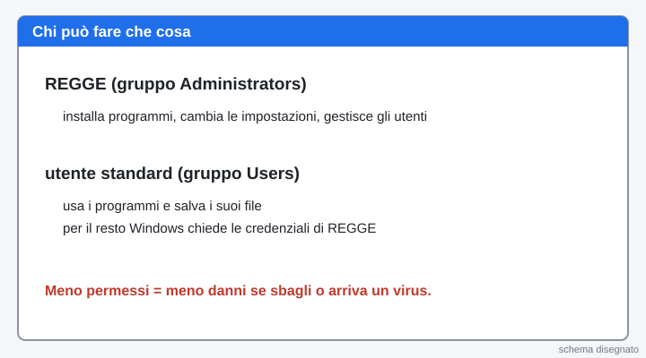
1. Che cos'è un account
Un account è il tuo nome dentro il PC. Con l'account Windows sa chi sei e che cosa puoi fare.
2. Amministratore e utente standard
L'amministratore (REGGE) può cambiare tutto: installare programmi e togliere altri utenti. L'utente standard usa il PC ma non può rompere il sistema. Oggi non hai un utente standard: lo studi come teoria.
3. Il gruppo
Un gruppo è una squadra di utenti con gli stessi permessi. Administrators è la squadra dei capi. Users è la squadra degli utenti normali.
4. Il servizio
Un servizio è un programma che lavora dietro le quinte, senza finestre. Per esempio quello che serve per stampare.
5. Il privilegio minimo
Meno permessi ha un utente, meno danni può fare un errore o un virus. Per questo un utente normale non è amministratore.
Parole nuove
| Account | il nome con cui entri nel PC |
|---|---|
| Amministratore | utente che può cambiare tutto (qui: REGGE) |
| Utente standard | utente con meno permessi (oggi non ne hai uno: lo studi come teoria) |
| Gruppo | squadra di utenti con gli stessi permessi (Administrators, Users) |
| Servizio | programma che lavora dietro le quinte, senza finestra |
| Gestione computer | finestra di Windows con utenti, gruppi e servizi |
| Privilegio minimo | ognuno ha solo i permessi che gli servono |
1Entra come REGGE
Se non sei già dentro come REGGE, scegli l'utente REGGE e premi Invio. REGGE non ha la password.
Cosa devi vedere: Si apre il desktop di Windows.
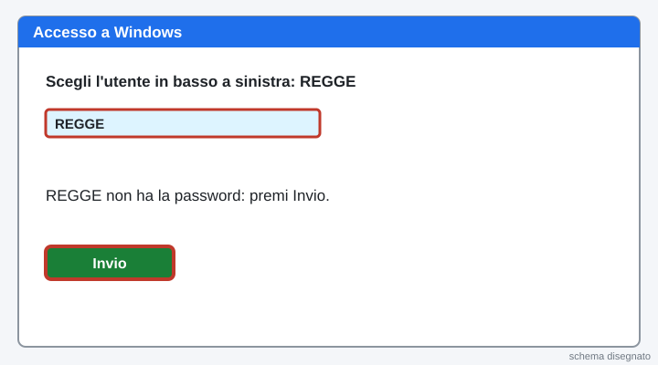
2Vinci subito: apri Gestione computer
Clicca con il tasto destro sul pulsante Start (in basso a sinistra). Nel menu clicca Gestione computer.
Cosa devi vedere: Si apre una finestra con il titolo «Gestione computer». Il primo risultato è fatto.

3Apri l'elenco degli utenti
A sinistra clicca Utenti e gruppi locali. Poi clicca la cartella Utenti.
Conta gli utenti e guarda quali hanno la freccia in giù: sono disattivati. Scrivili nella scheda in fondo.
Cosa devi vedere: C'è REGGE. Administrator e Guest hanno la freccia in giù. Se vedi altri utenti, scrivili nella scheda.
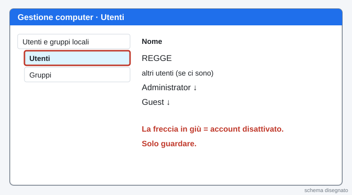
4Di che gruppo è REGGE?
Fai doppio clic su REGGE. Clicca la scheda Membro di e leggi il gruppo.
Clicca Annulla. Non cambiare niente.
Cosa devi vedere: REGGE è in Administrators.
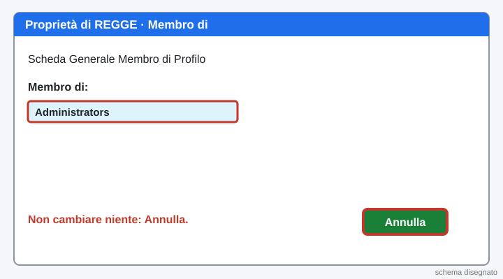
5Guarda i gruppi
Clicca la cartella Gruppi. Fai doppio clic su Administrators e leggi chi c'è dentro. Poi clicca Annulla.
Cosa devi vedere: Nel gruppo Administrators c'è REGGE.
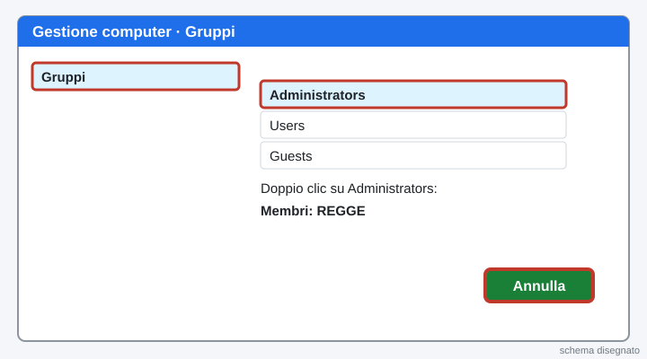
6Ripasso veloce
Chi può installare programmi senza chiedere le credenziali?
In quale gruppo sta REGGE?
Come si chiama l'idea «meno permessi, meno danni»?
Cosa devi vedere: tre risposte giuste in verde.

7Apri Servizi
Clicca Start, scrivi Servizi e premi Invio.
Cerca Spooler di stampa. Leggi Stato e Tipo di avvio e scrivili nella scheda. Solo guardare: non fermare niente.
Cosa devi vedere: Lo Spooler di stampa è «In esecuzione» e «Automatico».

Scheda B · I limiti di un utente standard
La teoria in schede
Leggi dall'alto in basso. Una idea per scheda.
1. Il controllo UAC
Quando un utente standard prova a fare un lavoro da amministratore, Windows apre una finestra (UAC) e chiede le credenziali di un amministratore (qui: REGGE). Oggi non hai un utente standard: leggi e guarda i disegni.
2. Perché serve
Il limite protegge il PC: un errore o un virus, con un utente standard, non possono cambiare tutto il sistema.
Parole nuove
| UAC (Controllo dell'account utente) | finestra che chiede le credenziali di un amministratore (qui: REGGE) |
|---|
8Osserva: che cosa NON può fare un utente standard
Questa è teoria: non devi fare niente, solo leggere e guardare il disegno.
Un utente standard non può cambiare l'ora, installare programmi o creare utenti. Se prova a farlo, Windows apre la finestra «Controllo dell'account utente» (UAC). La finestra chiede il nome e le credenziali di un amministratore (qui: REGGE). Se non le ha, preme No e il programma non parte.
Scrivi nella scheda che cosa chiede la finestra UAC a un utente standard.
Cosa devi vedere: Hai letto come funziona. Oggi non hai un secondo account: lo proverai più avanti.
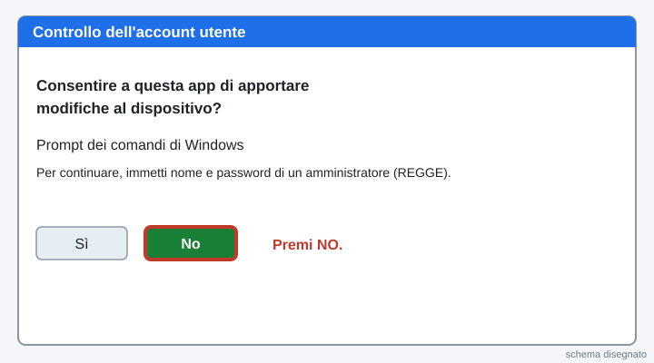
9Prova da REGGE: Esegui come amministratore
Clicca Start e scrivi cmd. Clicca con il tasto destro su Prompt dei comandi, poi Esegui come amministratore.
Si apre la finestra «Controllo dell'account utente». Per REGGE ci sono solo i bottoni Sì e No, senza password. Premi No. Scrivi nella scheda che cosa hai visto.
Cosa devi vedere: Finestra «Controllo dell'account utente» con i bottoni Sì e No.
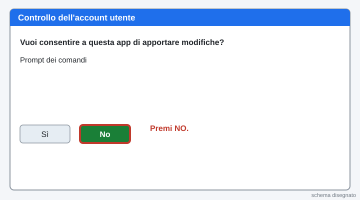
Scheda C · Visualizzatore eventi
La teoria in schede
Leggi dall'alto in basso. Una idea per scheda.
1. Il diario del PC
Windows scrive in un diario tutto quello che succede: accensioni, errori, accessi. Si chiama registro eventi.
2. I tre registri principali
Applicazione, Sicurezza e Sistema. In Sicurezza ci sono gli accessi e gli utenti creati. In Sistema ci sono le accensioni e gli errori.
3. L'ID evento
Ogni tipo di evento ha un numero, l'ID. Per esempio 12 = il sistema è stato avviato, 4720 = creato un utente, 4624 = accesso riuscito, 4625 = accesso fallito (qualcuno ha sbagliato la password).
4. Perché serve alla sicurezza
Se qualcuno prova a indovinare una password, il diario lo scrive. Il diario protegge i dati perché si può controllare chi ha fatto che cosa. Una copia salvata del diario è una prova.
Parole nuove
| Registro eventi | il diario di Windows |
|---|---|
| Visualizzatore eventi | il programma che mostra il diario |
| ID evento | il numero di un tipo di evento |
| Filtro | serve a vedere solo gli eventi che cerchi |
| Livello | quanto è grave: Informazioni, Avviso, Errore, Critico |
| File .evtx | la copia salvata del registro |
10Entra come REGGE e apri Visualizzatore eventi
Entra come REGGE. Clicca con il tasto destro su Start, poi Visualizzatore eventi.
Cosa devi vedere: Si apre la finestra «Visualizzatore eventi».

11Vinci subito: guarda i registri
A sinistra apri Registri di Windows. Clicca Sistema, poi Sicurezza.
Cosa devi vedere: A destra compare un lungo elenco di eventi.
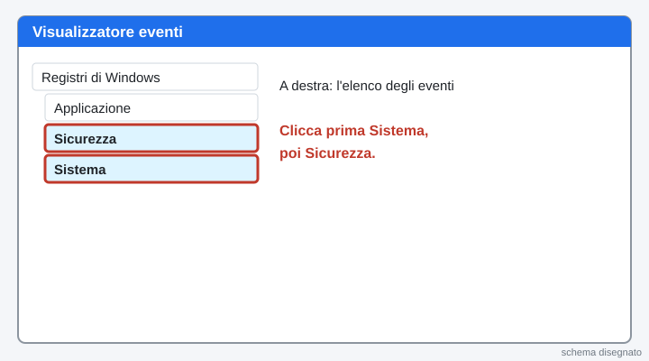
12A che ora si è acceso il PC?
Clicca Sistema. A destra clicca Filtra registro corrente…. Nella casella ID scrivi 12 e premi OK.
Leggi l'ora della riga in alto e scrivila nella scheda.
Cosa devi vedere: La riga dice «Il sistema operativo è stato avviato».
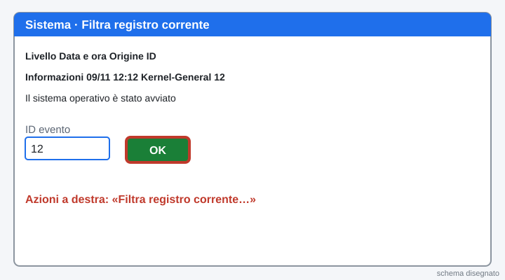
13Chi ha creato REGGE?
Clicca Sicurezza, poi Filtra registro corrente…. Scrivi 4720 e premi OK.
Apri la riga: leggi l'ora e chi ha creato l'utente. Se non c'è nessuna riga, il PC è stato ripristinato: scrivilo nella scheda.
Cosa devi vedere: Compare «È stato creato un account utente» con il nome REGGE.
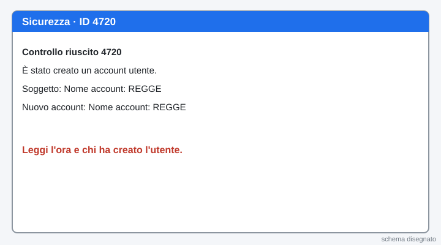
14Ripasso veloce
Quale registro contiene gli accessi e gli utenti creati?
Che cosa vuol dire l'ID 12?
Che cos'è un filtro?
Cosa devi vedere: tre risposte giuste in verde.
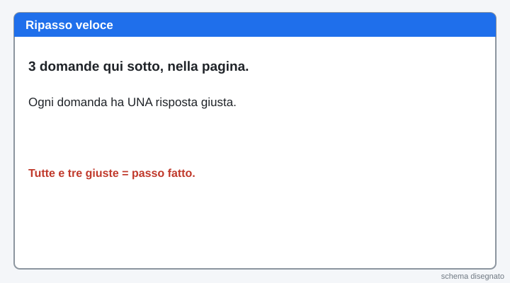
15Fai nascere un evento: esci e rientra
Clicca Start, l'omino, Esci. Scegli REGGE e premi Invio (non c'è la password).
Cosa devi vedere: Sei di nuovo dentro come REGGE.
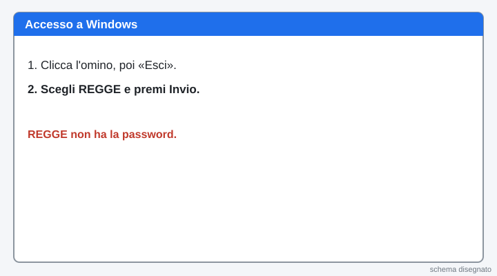
16Trova l'accesso riuscito
Apri di nuovo Visualizzatore eventi, Sicurezza. Filtra con ID 4624.
Cerca una riga con Nome account REGGE. Aprila: leggi il nome dell'account e l'ora. Scrivili nella scheda.
Cosa devi vedere: Il Nome account è REGGE e l'ora è quella del tuo ingresso.
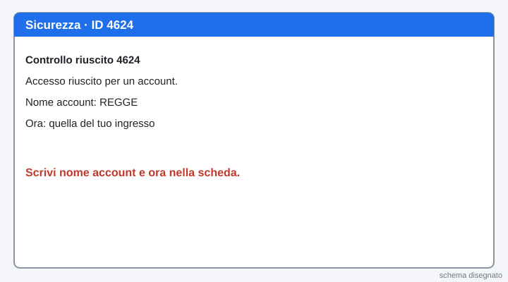
17Gli errori del sistema
Clicca Sistema, poi Filtra registro corrente…. Spunta Critico e Errore, premi OK.
Apri un evento e scrivi nella scheda l'Origine e l'ID. Non devi capire tutto: basta leggere.
Cosa devi vedere: Un elenco di eventi rossi o gialli (o nessuno, se il PC è pulito).
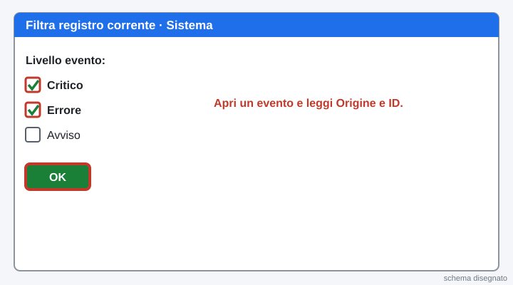
18Salva una copia del registro
Clicca Azione (in alto), poi Salva tutti gli eventi con nome…. Scegli la cartella Documenti. Scrivi il nome eventi-pc e il tuo numero di PC. Premi Salva.
Cosa devi vedere: In Documenti c'è un file .evtx con il tuo nome.
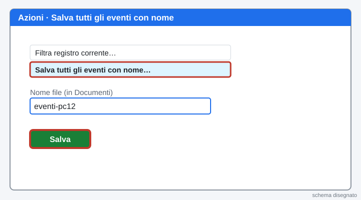
19Fallo tuo: spiega un evento
Scegli un evento di Sistema che ti incuriosisce. Scrivi nella scheda l'ID, l'Origine e che cosa dice, con parole tue. Se non capisci, chiedi all'assistente.
Cosa devi vedere: Hai scelto un evento e l'hai spiegato.
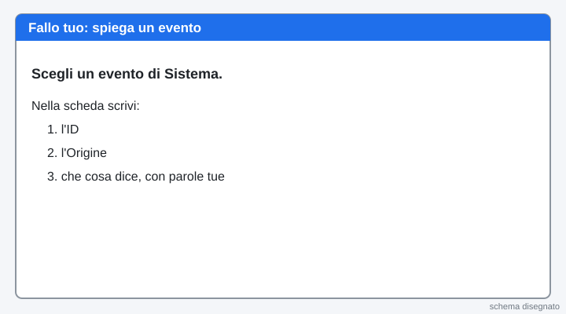
Scheda D · Monitoraggio risorse
Questa scheda si fa nell'ora 6, con la sua pagina. Chi finisce prima può cominciare qui: i passi sono extra e non contano per «Hai fatto».
La teoria in schede
Leggi dall'alto in basso. Una idea per scheda.
1. Le risorse del PC
La CPU calcola, la RAM è la memoria mentre il PC lavora, il disco tiene i file, la rete fa entrare e uscire i dati.
2. Due strumenti
Gestione attività è veloce e semplice. Monitoraggio risorse mostra più dettagli: memoria installata, rete, disco.
3. Perché serve alla sicurezza
Un programma che usa troppa CPU o troppa rete senza motivo può essere un virus o un programma sbagliato. Guardare le risorse è il primo controllo.
Parole nuove
| CPU | il processore: il cervello che calcola |
|---|---|
| RAM | la memoria che il PC usa mentre lavora |
| Processo | un programma che sta girando |
| Gestione attività | finestra con i processi e le prestazioni |
| Monitoraggio risorse | finestra con i dettagli su CPU, memoria, disco e rete |
20Apri Gestione attività
Premi insieme i tasti Ctrl, Maiusc e Esc. Se la finestra è piccola, clicca Più dettagli in basso.
Cosa devi vedere: Si apre «Gestione attività» con la scheda Processi.

21Trova il processo più pesante
Nella scheda Processi clicca l'intestazione CPU. Il processo che usa di più va in alto. Scrivi il suo nome nella scheda.
Cosa devi vedere: In alto c'è il processo che usa più CPU.
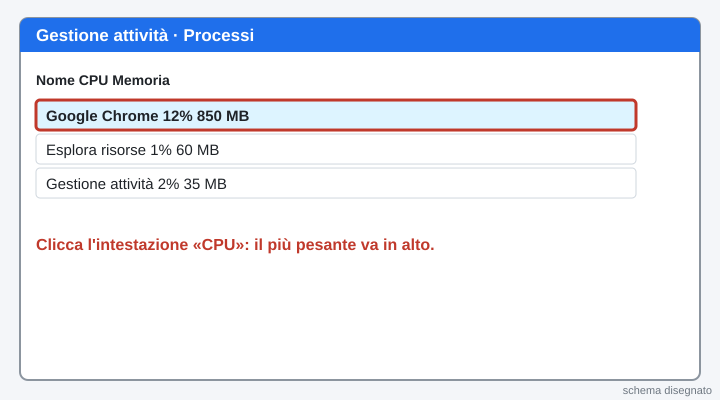
22Guarda CPU e memoria
Clicca la scheda Prestazioni. Clicca CPU e leggi la percentuale. Clicca Memoria e leggi quanti GB sono in uso.
Cosa devi vedere: Due numeri: percentuale CPU e GB di memoria in uso.
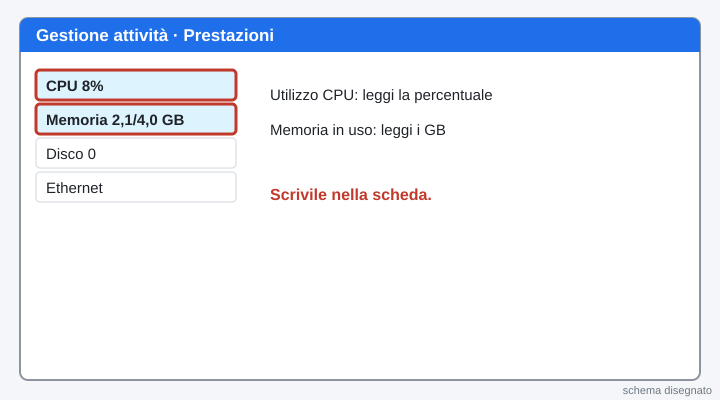
23Apri Monitoraggio risorse
In fondo alla scheda Prestazioni clicca Apri Monitoraggio risorse. Oppure clicca Start, scrivi Monitoraggio risorse e premi Invio.
Cosa devi vedere: Si apre una finestra con le schede Panoramica, CPU, Memoria, Disco, Rete.
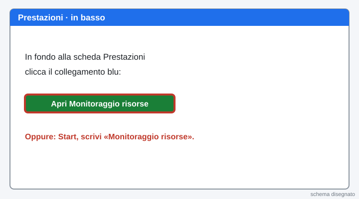
24Quanta memoria ha il PC?
Clicca la scheda Memoria. In basso leggi Installata (per esempio 4096 MB = 4 GB). Scrivila nella scheda.
Cosa devi vedere: Un numero in MB vicino a «Installata».

25Chi usa la rete?
Clicca la scheda Rete. Guarda la lista Processi con attività di rete. Scrivi nella scheda il nome di UN processo.
Cosa devi vedere: Una lista di programmi che mandano o ricevono dati.
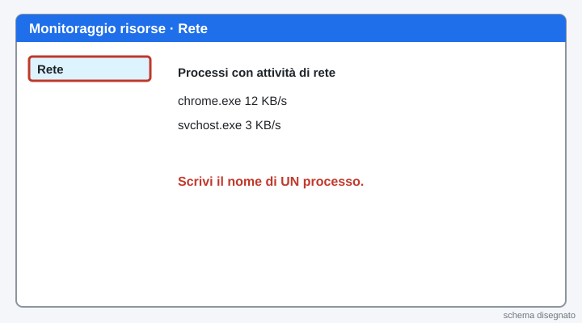
Scheda E · Quiz e consegna
26Quiz su Moduli (10 domande, servono 7 giuste)
Premi il bottone verde: si apre il quiz in una scheda nuova. Dove c'è «scegli 2 risposte» metti DUE crocette. Puoi rifarlo: vale il migliore.
Apri il quiz su ModuliCosa devi vedere: Alla fine del quiz torna a questa pagina.

27Mostralo: spiegalo al compagno
Racconta al compagno in 30 secondi: chi è REGGE, che cos'è un servizio, che cosa può fare un utente standard e che cosa no, che cos'è il registro eventi e l'ID.
Cosa devi vedere: Se sai spiegarlo con parole tue, l'hai capito.
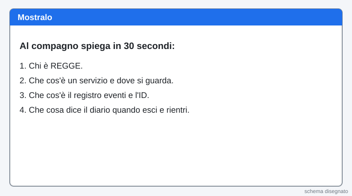
28Scheda e Manda al prof
Compila la scheda qui sotto e premi il bottone verde Manda al prof. Un clic solo.
Se il bottone non funziona: premilo di nuovo tra un minuto. La scheda resta salvata in questa pagina. Se ancora non va, scrivi all'assistente.

La pagina viene aggiornata spesso durante la lezione: premi F5 per vedere la versione nuova.